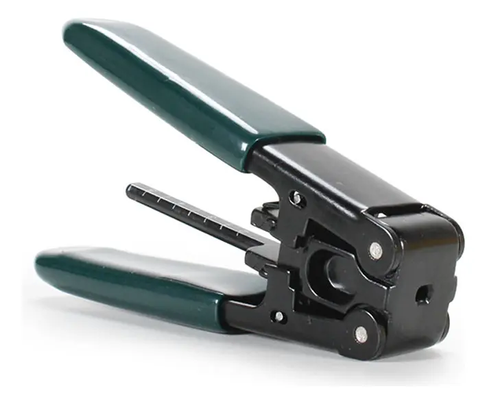
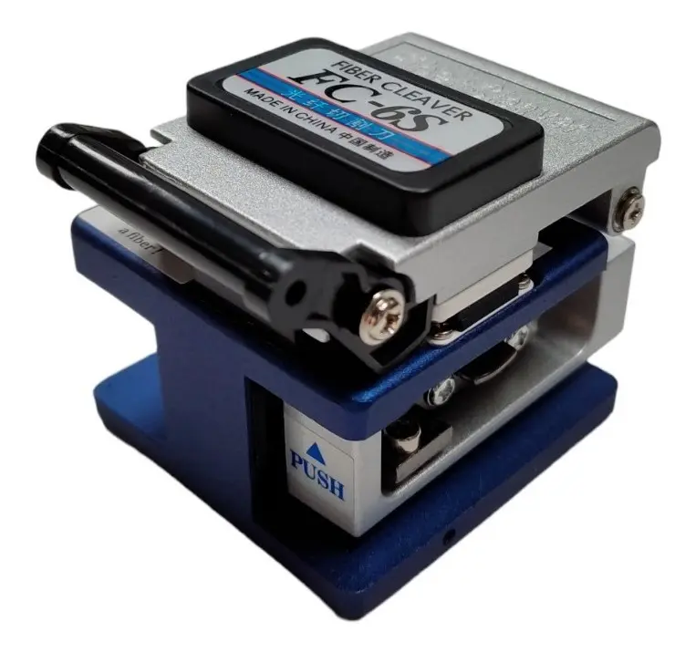
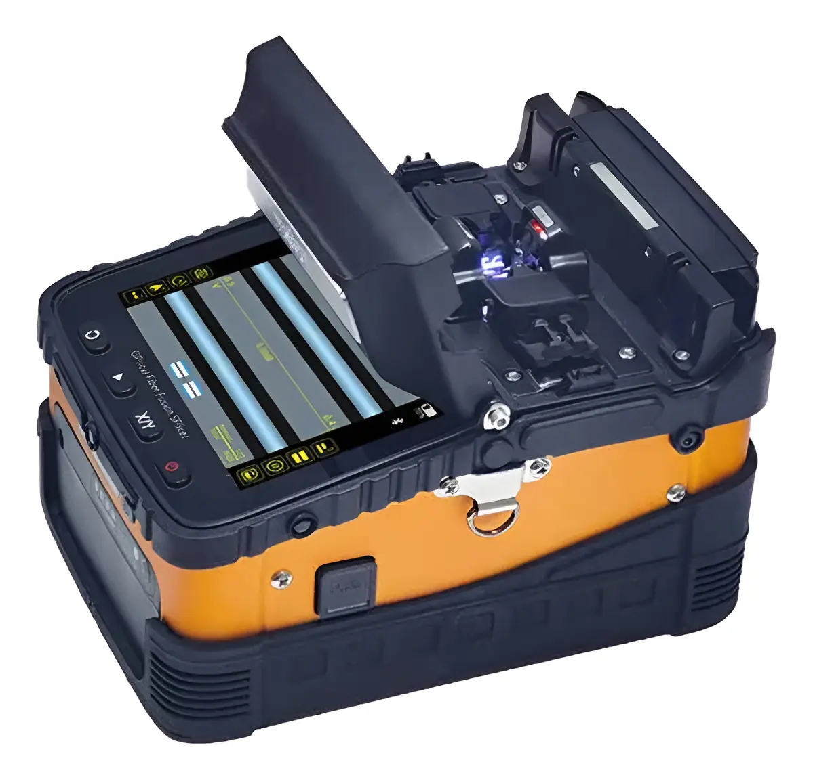
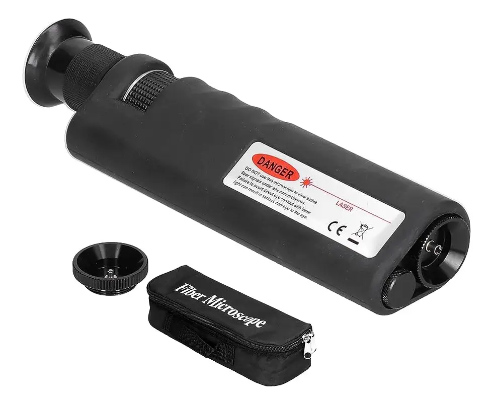
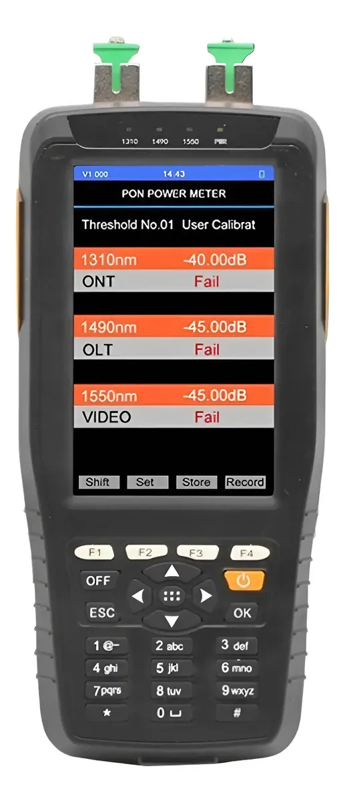
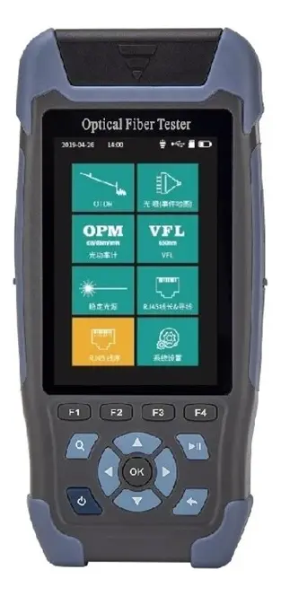

Redes GPON y FTTH
Guía visual para entender cómo viaja Internet por fibra óptica desde el operador hasta la casa.
1. ¿Qué es GPON?
GPON es una tecnología que permite llevar Internet mediante fibra óptica desde un equipo del operador hasta muchos usuarios.
La palabra pasiva significa que entre el equipo del operador y los usuarios se utilizan elementos que no necesitan alimentación eléctrica, como el splitter óptico.
2. Los equipos principales

OLT
Está en el lado del operador. Es el equipo que inicia y controla la comunicación de la red GPON.
Splitter
Divide la señal óptica para que una fibra pueda llegar a varios usuarios.
Roseta Óptica (PTO)
Punto de terminación óptico ubicado dentro de la vivienda donde finaliza la acometida exterior (cable drop) y se realiza la conexión mediante patchcord hacia el equipo del cliente.
ONU / ONT
Está del lado del cliente. Recibe la señal óptica y la convierte para que los equipos de la casa puedan utilizarla.
3. ¿Cómo llega la fibra a una casa?

4. Conectores: APC y UPC
Los conectores pueden parecer iguales, pero la terminación de la fibra es diferente.
SC/APC

Conector SC con pulido angular.
SC/UPC

Conector SC con pulido ultra plano.
LC/APC

Formato compacto dúplex/símplex.
LC/UPC

Formato compacto de alta densidad.
APC vs. UPC, explicado fácil
UPC tiene una terminación más plana. APC tiene una terminación inclinada, aproximadamente 8° para reducir la reflexión hacia atrás (ORL).
En una instalación se debe utilizar el tipo de conector especificado por los equipos y accesorios. No se deben acoplar directamente conectores APC y UPC, porque la geometría no coincide y puede producir pérdidas severas, reflexiones o daños en las superficies de conexión.
5. ¿Cómo viaja la información?
Downstream: del operador hacia el cliente
La OLT envía información hacia las ONU/ONT en modo broadcast optimizado. En GPON se utiliza normalmente una longitud de onda de 1490 nm (nanómetros).
Upstream: del cliente hacia el operador
Las ONU/ONT envían información de regreso hacia la OLT en momentos organizados por tiempo. En GPON se utiliza normalmente 1310 nm.
Porque se utilizan diferentes longitudes de onda (WDM) y, en upstream, las ONU/ONT transmiten en ráfagas organizadas mediante TDMA (Time Division Multiple Access) para evitar colisiones.
6. Transceptores: el concepto que hay que entender
Piensa en un transceptor como un traductor
Un transceptor permite convertir información entre el mundo eléctrico y el mundo óptico.
Dos funciones en un mismo módulo
TX (Transmit): toma la información eléctrica y genera una señal óptica que entra en la fibra mediante un diodo láser (LD/VCSEL).
RX (Receive): recibe la señal óptica de la fibra y la convierte nuevamente en una señal eléctrica mediante un fotodiodo (PIN/APD).
SFP
Formato de módulo enchufable (Small Form-factor Pluggable) para redes de datos. Not all SFP are GPON.
SFP+
Evolución de SFP para 10 Gbps o superiores en enlaces de interconexión y troncales.
Óptica GPON (ONT/ONU/OLT stick)
Módulos diseñados específicamente para framing GPON, control de potencia y sincronización de ráfagas upstream.
Media Converter
Equipo autónomo o chasis que adapta medios físicos (ej. cobre RJ45 a fibra óptica SFP).
Respuesta: RX, porque está recibiendo la señal óptica fotónica y demodulándola.
7. Herramientas para construir una red GPON
Construir, empalmar y certificar una acometida FTTH o un tramo de planta externa FTTH requiere instrumentación especializada de precisión:
Pelacables y Stripper de Drop

Permiten retirar la chaqueta externa del cable drop (FTTH flat/rectangular) o de la fibra desnuda (250 µm / 900 µm) sin rayar el núcleo de vidrio.
Cleaver de Alta Precisión

Corta el filamento de fibra óptica en un ángulo perpendicular ideal (90° ± 0.5°), indispensable para garantizar una baja pérdida en fusión o conector mecánico.
Empalmadora por Fusión (Fusion Splicer)

Alinea automáticamente los núcleos de dos fibras mediante arco eléctrico y motores de precisión, logrando pérdidas típicas inferiores a 0.02 dB.
Microscopio Óptico (Sondeo / 200x–400x)

Inspecciona la férula del conector o patchcord para detectar polvo, grasa, ralladuras o cráteres que produzcan reflexiones (ORL) o saturación en OLT/ONU.
Medidor de Potencia Óptica (OPM / GPON Power Meter)

Mide el nivel de señal en dBm (ej. 1490/1310 nm). Los medidores GPON selectivos miden upstream y downstream simultáneamente sin cortar servicio.
OTDR (Optical Time Domain Reflectometer)

Inyecta pulsos de luz para generar una traza reflectométrica. Permite localizar cortes, empalmes defectuosos, atenuaciones por macrocurvatura y distancia total del enlace.